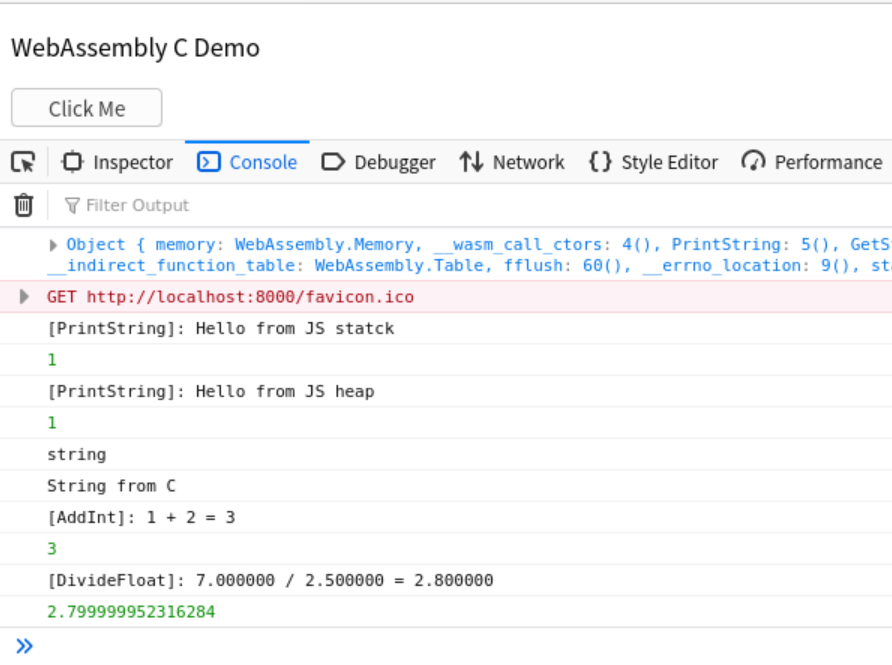
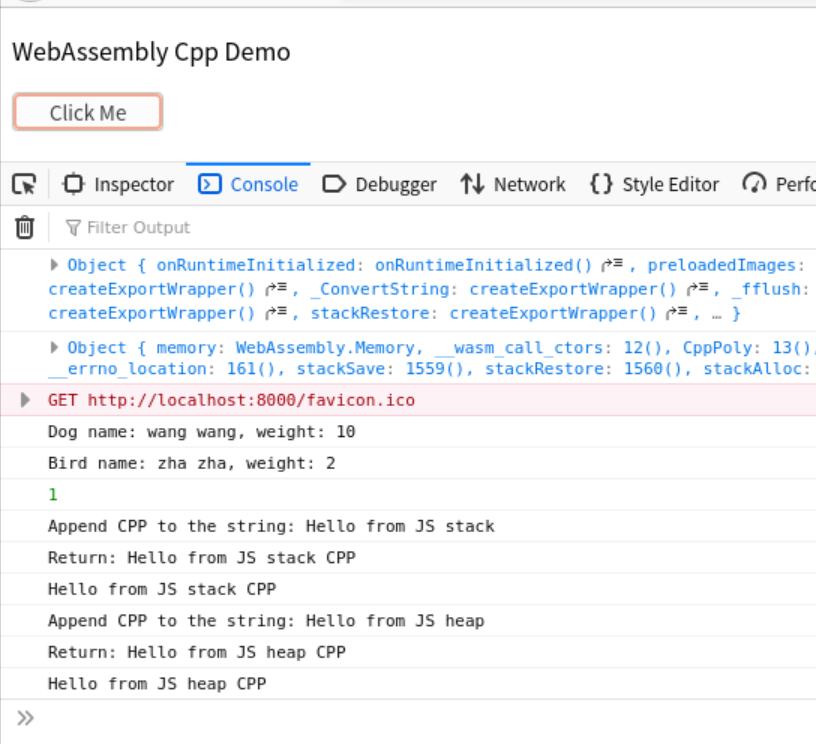
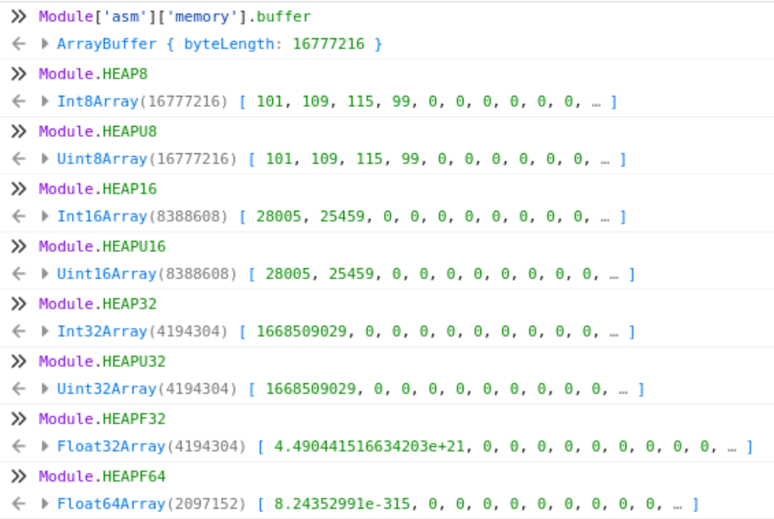
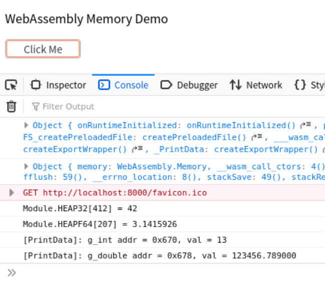
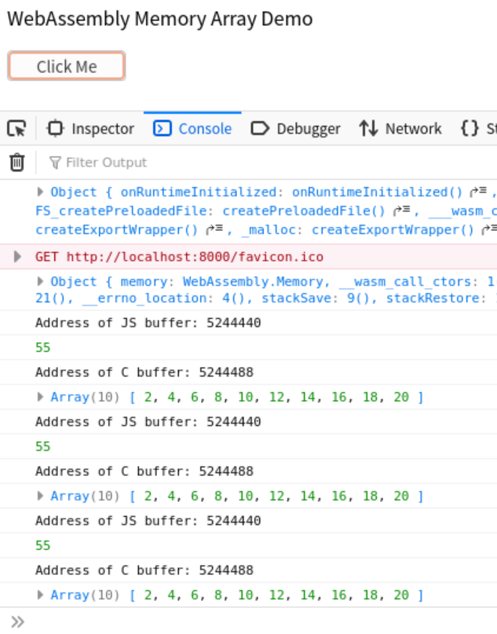

WebAssembly¶
简单的“WebAssembly + C/Cpp”样例，所有样例可在GitHub仓库中找到
WebAssembly with C¶
代码实例¶

-
- 通过
EMSCRIPTEN_KEEPALIVE宏将C函数输出给JS代码 - 支持字符串、整型和浮点数在C代码和JS代码之间传递
#include <stdio.h> #include <emscripten.h> EMSCRIPTEN_KEEPALIVE int PrintString(const char* str) { printf("[%s]: %s\n", __func__, str); return 1; } EMSCRIPTEN_KEEPALIVE const char* GetString() { static const char str[] = "String from C"; return str; } EMSCRIPTEN_KEEPALIVE int AddInt(int a, int b) { int res = a + b; printf("[%s]: %d + %d = %d\n", __func__, a, b, res); return res; } EMSCRIPTEN_KEEPALIVE float DivideFloat(float a, float b) { float res = a / b; printf("[%s]: %f / %f = %f\n", __func__, a, b, res); return res; }
- 通过
-
- JS中字符串可以创建在堆或者栈上，在堆上创建的字符串需要手动释放
- 由于emcc默认不输出
malloc和free，如果需要在堆上创建字符串，需要在编译时加入-s "EXPORTED_FUNCTIONS=['_malloc', '_free']"编译选项<script> // Set up wasm module callback function to print info Module = {}; Module.onRuntimeInitialized = function () { console.log(Module) // Print C function, malloc and free can be printed here // if they are exported intentionally when compiling console.log(Module['asm']) } // Set up button function function button() { // Pass string from JS to C strOnStack = allocateUTF8OnStack("Hello from JS stack"); console.log(Module._PrintString(strOnStack)); strOnHeap = allocateUTF8("Hello from JS heap"); console.log(Module._PrintString(strOnHeap)); Module._free(strOnHeap); // Get string from C to JS var str = UTF8ToString(Module._GetString()); console.log(typeof (str)); console.log(str); // Process Integer in C console.log(Module._AddInt(1, 2)); // Process Float in C console.log(Module._DivideFloat(7, 2.5)); } </script>
WebAssembly with Cpp¶
代码实例¶

- Cpp代码
- 为了防止C++的
name mangling，所有的API都通过extern "C"修饰后，以C API的形式传给JS - 支持C++多态，STL库
EMSCRIPTEN_KEEPALIVE extern "C" int CppPoly() { std::unique_ptr<CPP::Animal> a_dog = std::make_unique<CPP::Dog>("wang wang"); std::unique_ptr<CPP::Animal> a_bird = std::make_unique<CPP::Bird>("zha zha"); a_dog->set_weight(10); a_bird->set_weight(2); a_dog->dump(); a_bird->dump(); return 1; } EMSCRIPTEN_KEEPALIVE extern "C" const char* ConvertString(const char* input) { static std::string s_str; s_str.clear(); s_str.append(input); std::cout << "Append CPP to the string: " << s_str << std::endl; s_str.append(" CPP"); std::cout << "Return: " << s_str << std::endl; return s_str.c_str(); }
- 为了防止C++的
- HTML代码
- 用法和上面的C代码例子类似，此处不再细述
WebAssembly的内存模型¶
Emscripten提供了一个ArrayBuffer对象，用于C/C++和JS代码共享内存，默认内存大小为：16MB (2^24 = 16777216)。我们可以在浏览器终端通过Module['asm']['memory'].buffer得到ArrayBuffer对象。
| 对象 | TypedArray | 对应C数据类型 |
|---|---|---|
| Module.HEAP8 | Int8Array | int8 |
| Module.HEAP16 | Int16Array | int16 |
| Module.HEAP32 | Int32Array | int32 |
| Module.HEAPU8 | Uint8Array | uint8 |
| Module.HEAPU16 | Uint16Array | uint16 |
| Module.HEAPU32 | Uint32Array | uint32 |
| Module.HEAPF32 | Float32Array | float |
| Module.HEAPF64 | Float64Array | double |
针对这16MB的内存空间，Emscripten在其上面创建了8种view(如上表)，分别对应8种数据类型。例如，Module['HEAP8'] = new Int8Array(Module['asm']['memory'].buffer)就在ArrayBuffer对象上创建了一个HEAP8的view。下图中，所有view的空间内存空间是一样的(下图中内存的起始内容都是一样的，大小也都是16MB)，由编译器确保不同变量的地址不冲突。

基本数据类型的传递¶
基本数据类型按值传递不需要考虑内存模型，直接用JS变量就可以传递和接收数据。
如果基本数据类型按指针传递，可以通过Module.HEAP_[addr]的方式在JS中直接获取内存的值，其中addr就是C代码返回的变量指针。C代码中的非局部变量都构建在ArrayBuffer对象上，因此JS可以通过相应的view进行访问。JS代码拿到C代码返回的内存指针后，经过偏移计算，就可以得到变量在view中的偏移。在JS中将内存内容拷贝到本地，就完成了从C代码项JS代码传数据的功能。
例子"mem"实现了C代码和JS代码对基本数据类型的读写：
-
- C代码中的全局变量存在于
ArrayBuffer对象，在JS中可通过对应的View加地址访问 - 函数返回的指针，在JS代码中对应View上的地址
int g_int = 42; double g_double = 3.1415926; EMSCRIPTEN_KEEPALIVE int* GetIntPtr() { return &g_int; } EMSCRIPTEN_KEEPALIVE double* GetDoublePtr() { return &g_double; } EMSCRIPTEN_KEEPALIVE void PrintData() { printf("[%s]: g_int addr = %p, val = %d\n", __func__, &g_int, g_int); printf("[%s]: g_double addr = %p, val = %lf\n", __func__, &g_double, g_double); }
- C代码中的全局变量存在于
-
- 通过
Module.HEAP32[addr]可以访问内存中的int32变量，其他类型方法雷同<script> function button() { // HEAP32 heap var int_ptr = Module._GetIntPtr(); // right shift 2 because sizeof(int) == 4(2^2) var int_value = Module.HEAP32[int_ptr >> 2]; // Console output: Module.HEAP32[256] = 42 console.log("Module.HEAP32[" +(int_ptr >> 2) + "] = " + int_value); // HEAPF64 heap var double_ptr = Module._GetDoublePtr(); // right shift 2 because sizeof(double) == 8(2^3) var double_value = Module.HEAPF64[double_ptr >> 3]; // Console output: Module.HEAPF64[201] = 3.1415926 console.log("Module.HEAPF64[" +(double_ptr >> 3) + "] = " + double_value); // Modify the memory Module.HEAP32[int_ptr >> 2] = 13; Module.HEAPF64[double_ptr >> 3] = 123456.789 // Console output: C{g_int:13} C{g_double:123456.789000} Module._PrintData() } </script>
- 通过
-
实验结果

64位数据类型的传递¶
上面的HEAP_函数没有针对64位数据的操作，但是emcc提供了更上一层的方法setValue和getValue，支持i8, i16, i32, i64, float, double中的任意类型，详情可参考手册。默认情况下，这两个函数不会被export，因此在编译时需要添加"EXPORTED_FUNCTIONS=[getValue, setValue]"选项。
注意：当前版本的
emcc的getValue对于64位整数的读取和32位整数的读取完全一样，因此如果当前数据超过2^32大小会存在问题，请通过分别读取低32位和高32位获取完整的64位数据。而setValue没有此问题。
例子"mem_64"实现了C代码和JS代码对64位整数的读写：
EMSCRIPTEN_KEEPALIVE
int64_t* GetInt64Ptr()
{
return &g_int64;
}
EMSCRIPTEN_KEEPALIVE
void PrintData() {
printf("[%s]: g_int64 addr = %p, val = %lld\n", __func__, &g_int64, g_int64);
}
<script>
function button() {
// Get 64-bit data
const int64_ptr = Module._GetInt64Ptr();
const int64_low32 = BigInt(Module.HEAP32[int64_ptr >> 2])
const int64_high32 = BigInt(Module.HEAP32[(int64_ptr + 4) >> 2])
const int64_value = (int64_high32 << BigInt(32)) + int64_low32
console.log("Module.getValue[" + int64_ptr + "] = " + int64_value.toString(16));
// Set 64-bit data
Module.setValue(int64_ptr, -1 * Math.pow(2, 33), "i64")
Module._PrintData()
}
</script>
数组类型的传递¶
和基本数据类型指针传递不同，数组类型传递需要知道数组大小。在JS代码中拿到数组的起始地址和长度后，将全部内容拷贝到JS本地变量中。同时，JS应该负责内存的释放。
例子"web_mem_arr"实现了C代码和JS代码对基本数组类型的读写：
-
- C代码接收JS传过来的数组起始地址和数组大小，并创建了一个新的数组返回给JS
- 这里虽然C代码在堆上建立了一个新的数组，但是将释放的权限转交给了JS
EMSCRIPTEN_KEEPALIVE int* DoubleArr(const int* buf, const int len) { int* ret_buf = (int*)malloc(len * sizeof(int)); for (int i = 0; i < len; i++) { //printf("[%s]: Array from JS buf[%d] = %d\n", __func__, i, buf[i]); ret_buf[i] = buf[i] * 2; } return ret_buf; }
-
- 从打印的结果可以看出，虽然我们释放了内存，但是每次按下按钮，构建的内存地址都是不变的，说明编译器对其做了优化。
<script> // Set up button function function button() { const len = 10; const elem_bytes = Int32Array.BYTES_PER_ELEMENT; const js_arr_on_heap = Module._malloc(elem_bytes * len); console.log("Address of JS buffer: " + js_arr_on_heap); for (let i = 0; i < len; i++){ Module.HEAP32[js_arr_on_heap / elem_bytes + i] = i + 1; } // Pass buffer from JS to C console.log(Module._SumArray(js_arr_on_heap, len)); // Return buffer from C to JS const c_arr_on_heap = Module._DoubleArr(js_arr_on_heap, len); console.log("Address of C buffer: " + c_arr_on_heap); const data = [] for (let i = 0; i < len; i++) { data.push(Module.HEAP32[c_arr_on_heap / elem_bytes + i]); } console.log(data); Module._free(js_arr_on_heap); Module._free(c_arr_on_heap); } </script>
- 从打印的结果可以看出，虽然我们释放了内存，但是每次按下按钮，构建的内存地址都是不变的，说明编译器对其做了优化。
-
实验结果

64位数组类型的传递¶
例子"mem_64_arr"和64位整数类型一样，利用getValue/setValue就可以对64位数组类型进行了读写：
EMSCRIPTEN_KEEPALIVE
int64_t* DoubleArr64(const int64_t* buf, const int len) {
int64_t* ret_buf = (int64_t*)malloc(len * sizeof(int64_t));
for (int i = 0; i < len; i++) {
printf("[%s]: Array from JS buf[%d] = %lld(0x%llx)\n", __func__, i, buf[i], buf[i]);
ret_buf[i] = buf[i] * 2;
}
return ret_buf;
}
<script>
...
function button() {
const len = 10;
const js_arr_on_heap = Module._malloc(BigInt64Array.BYTES_PER_ELEMENT * len);
console.log("Address of JS buffer: " + js_arr_on_heap);
for (let i = 0; i < len; i++){
let addr = js_arr_on_heap + i * BigInt64Array.BYTES_PER_ELEMENT
Module.setValue(addr, i + 1, "i64")
}
// Return buffer from C to JS
const c_arr_on_heap = Module._DoubleArr64(js_arr_on_heap, len);
console.log("Address of C buffer: " + c_arr_on_heap);
for (let i = 0; i < len; i++) {
let addr = c_arr_on_heap + i * BigInt64Array.BYTES_PER_ELEMENT
const int64_low32 = BigInt(Module.HEAP32[addr >> 2])
const int64_high32 = BigInt(Module.HEAP32[(addr + 4) >> 2])
const int64_value = (int64_high32 << BigInt(32)) ^ int64_low32
console.log(int64_value.toString(16))
}
Module._free(js_arr_on_heap);
Module._free(c_arr_on_heap);
}
</script>